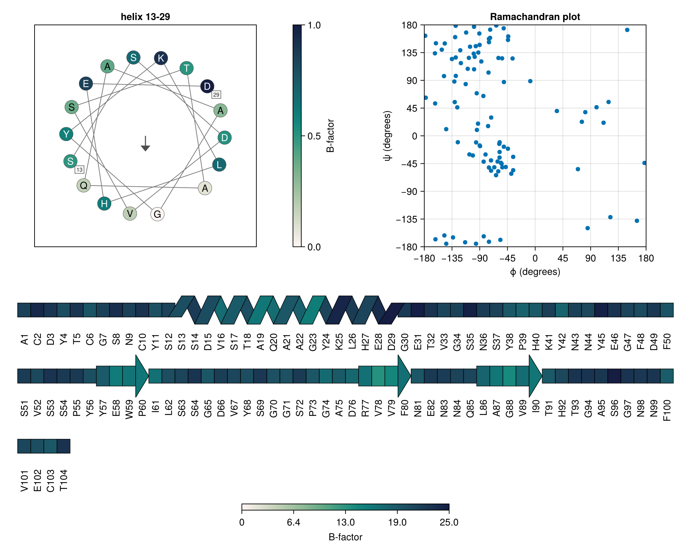
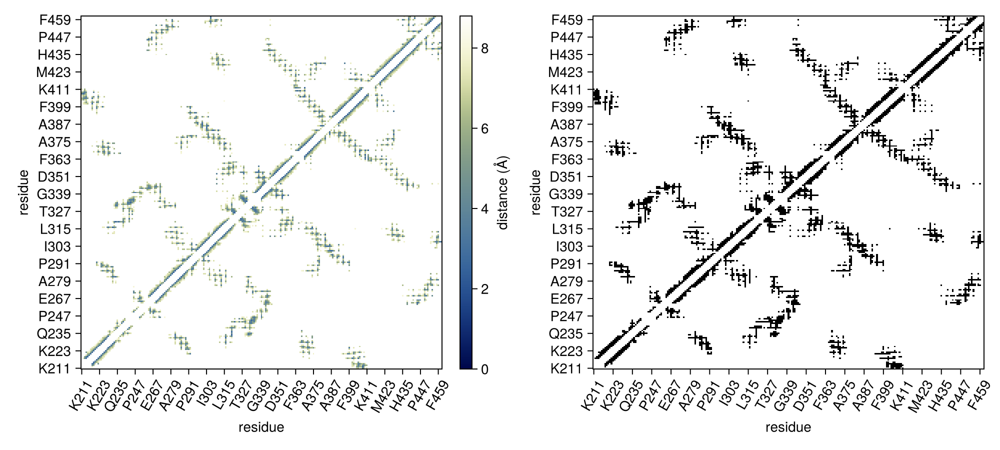
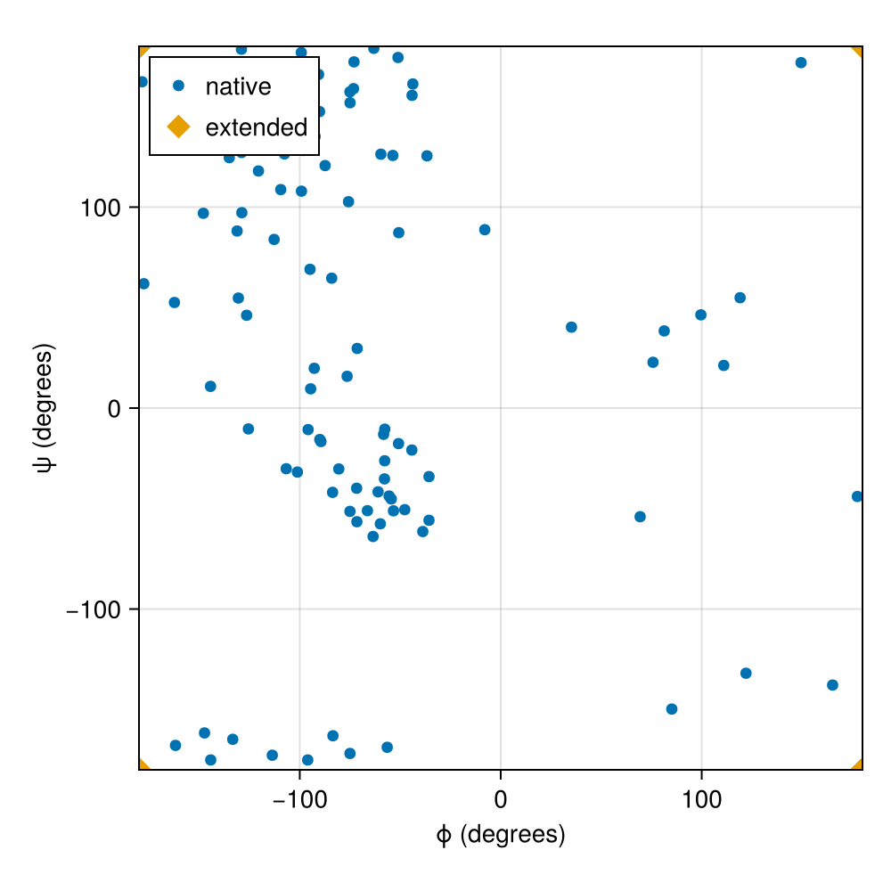
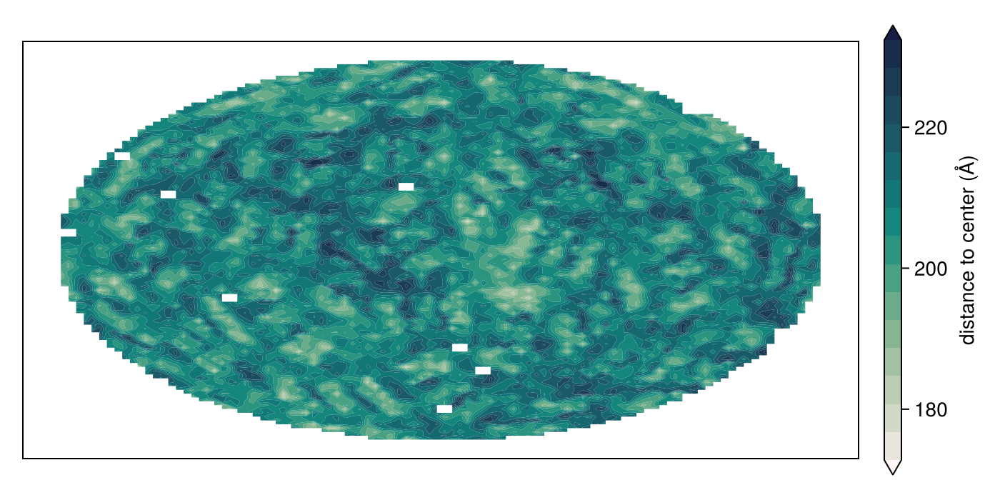

Advanced plotting
The plots of PDBTools are made with Makie, and are available when a Makie backend is loaded (e.g. using CairoMakie, or GLMakie for interactive use). In the other sections of this manual, each plot is a complete figure, returned by a single call (as plot(wheel) or heatmap(map)), with its color bar. This page describes how to combine the plots of PDBTools with each other, or with other Makie plots, in composite figures.
Plotting into a position of a figure
Each plotting function of PDBTools accepts a position of an existing figure as its first argument, as plot(fig[i, j], wheel). The plot, and its color bar, are drawn into that position, and the remaining keywords are the same of the complete figure (except size, font and fontsize, which are properties of the figure).
Here, a helical wheel, a Ramachandran plot and a secondary structure diagram are combined in a single figure:
using PDBTools, LazyArtifacts, CairoMakie
atoms = read_pdb(PDBTools.test_file("structure.pdb"), "protein")
helix = select(atoms, "resnum >= 13 and resnum <= 29")
fig = Figure(size = (1000, 800))
plot(fig[1, 1], helical_wheel(helix); colorbar_title = "B-factor", title = "helix 13-29")
scatter(fig[1, 2], Ramachandran(atoms); title = "Ramachandran plot")
plot(fig[2, 1:2], secondary_structure_diagram(atoms); colorbar_title = "B-factor")
fig
Similarly, two contact maps side by side:
ats = read_pdb(PDBTools.test_file("dimer.pdb"))
cA = select(ats, "chain A")
fig = Figure(size = (1000, 450))
heatmap(fig[1, 1], contact_map(cA; gap = 4, discrete = false, dmax = 8.0); colormap = :davos)
heatmap(fig[1, 2], contact_map(cA; gap = 4, dmax = 8.0))
fig
The functions return the GridLayout of the position, which contains the axis (or axes) and the color bar of the plot.
Plotting into an existing axis
The ! versions of the functions draw the plot into an existing Axis, without color bar and without changing the axis (labels, ticks, limits). They return the plot object. For example, the Ramachandran plots of two conformations of a protein, in the same axis:
fig = Figure(size = (500, 500))
ax = Axis(fig[1, 1]; xlabel = "ϕ (degrees)", ylabel = "ψ (degrees)", aspect = DataAspect())
scatter!(ax, Ramachandran(atoms); label = "native")
scatter!(ax, Ramachandran(extended_chain(atoms)); label = "extended", marker = :diamond, markersize = 15)
limits!(ax, -180, 180, -180, 180)
axislegend(ax; position = :lt)
fig
The plot object can be used, for example, to add a color bar with Makie's Colorbar:
capsid = read_pdb(PDBTools.test_file("capsid.pdb"), "name GC")
c = center_of_mass(capsid)
dist = [ sqrt((at.x - c[1])^2 + (at.y - c[2])^2 + (at.z - c[3])^2) for at in capsid ]
map = hammer_aitoff_map(capsid, dist; nbins = 100)
fig = Figure(size = (700, 350))
ax = Axis(fig[1, 1]; aspect = DataAspect())
hidedecorations!(ax)
plt = heatmap!(ax, map)
Colorbar(fig[1, 2], plt; label = "distance to center (Å)")
fig
The available functions are:
| Type | Complete figure | Position of a figure | Existing axis |
|---|---|---|---|
SecondaryStructureDiagram | plot(d) | plot(fig[i, j], d) | - |
HelicalWheel | plot(wheel) | plot(fig[i, j], wheel) | plot!(ax, wheel) |
HammerAitoffMap | heatmap(map) | heatmap(fig[i, j], map) | heatmap!(ax, map) |
ContactMap | heatmap(map) | heatmap(fig[i, j], map) | heatmap!(ax, map) |
Ramachandran | scatter(ram) | scatter(fig[i, j], ram) | scatter!(ax, ram) |
A secondary structure diagram has one axis per row, and thus cannot be drawn into an existing axis.
Fonts
The complete figures of PDBTools use the New Computer Modern font, distributed with Makie (the font keyword sets another font). In a composite figure, the fonts are those of the figure. To use the same font of the figures of PDBTools, set the LaTeX theme of Makie:
set_theme!(theme_latexfonts())